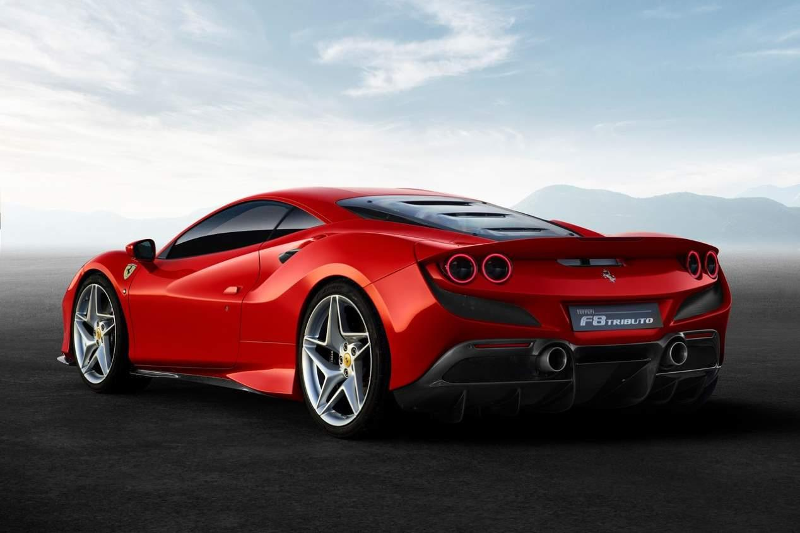
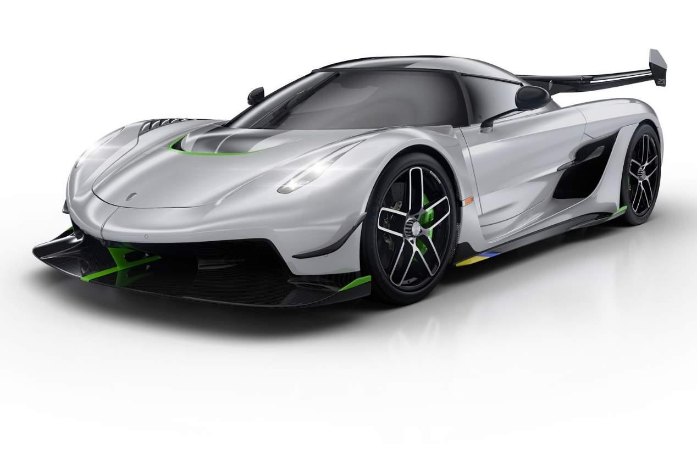
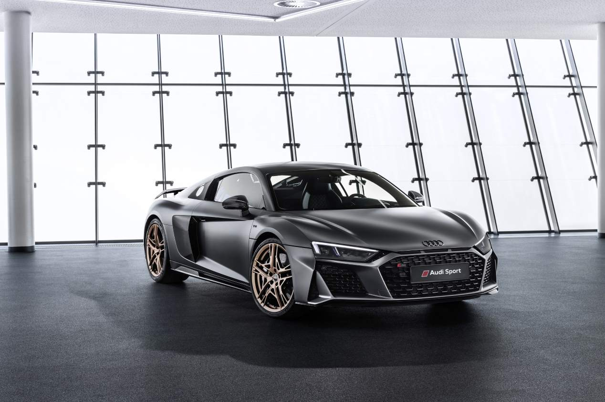
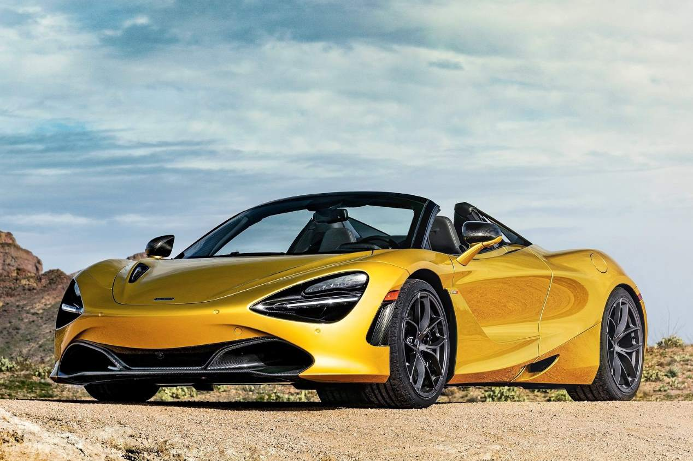
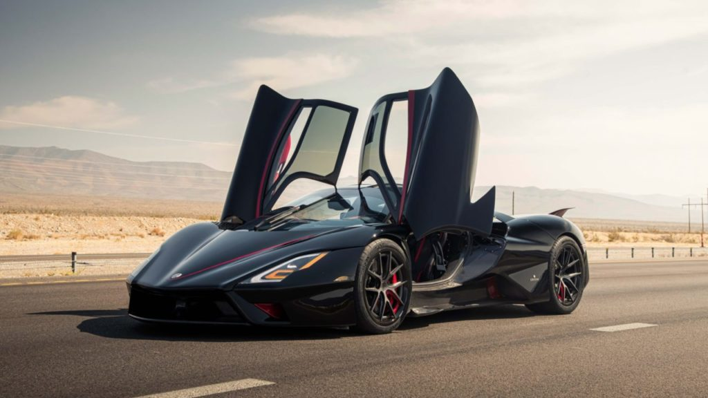
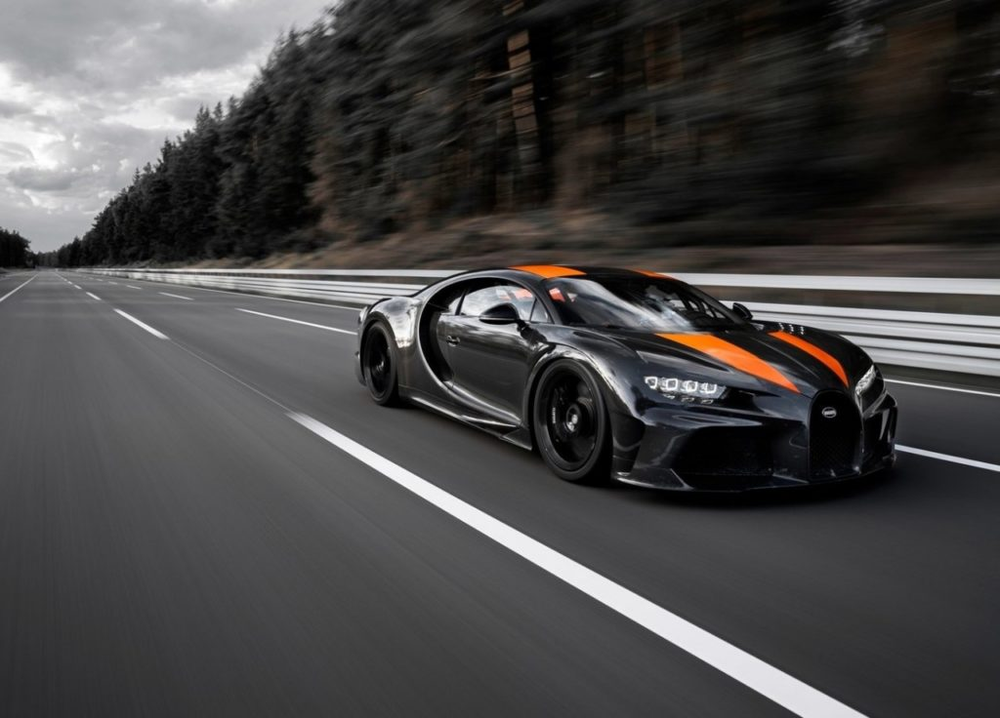
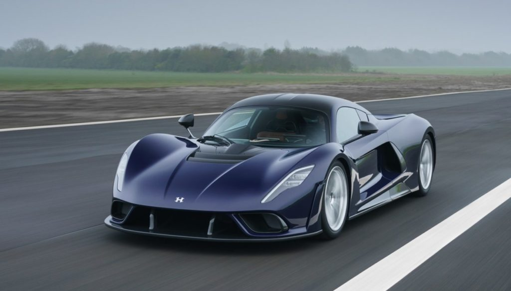
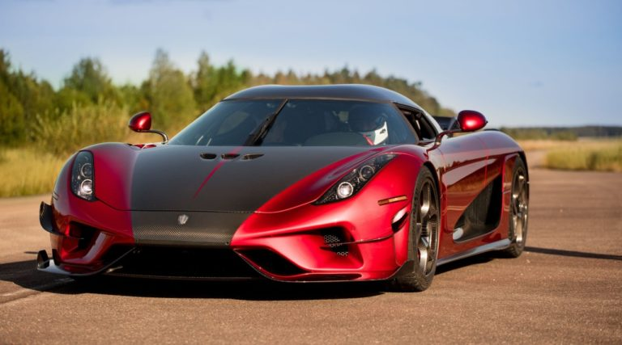

Autopasión
Sedanes deportivos
1. Lexus LS/Los mejores sedanes deportivos
Lexus siempre se ha destacado entre otros fabricantes de automóviles en diseño, rendimiento y lujo cuando se trata de sus sedanes. Lexus ha presentado el Lexus LS 2022 y, una vez más, ha demostrado ser impresionante en todos los aspectos. El LS tiene un tren motriz y una suspensión extraordinarios con una seguridad mejorada. Se espera que el próximo LS sea la nueva generación de autos de lujo definitivos en todo el mundo y para ganar eso, Lexus ha instalado un nuevo motor V6 de 3.5 litros biturbo que produce 415 hp y 443 libras-pie de torque.

2. BMW 530e iPerformance sedán
El BMW 530e es una versión clara de la serie 5 de BMW, con un enchufe. Este híbrido enchufable de BMW recibió la insignia «iPerformance» para mantenerlo en línea con los EV del i8 y el i3; Los modelos de coches verdes de BMW. El 530e fue diseñado con un motor de 4 cilindros turboalimentado de 2.0 litros, así como una transmisión automática de ocho velocidades y un solo motor eléctrico.

3.Nissan GTR R35
El Nissan GT-R es un automóvil deportivo gran turismo cupé 2+2 de 2 puertas, con motor delantero montado longitudinalmente y tracción en las cuatro ruedas,6 producido por el fabricante japonés Nissan, lanzado en Japón el 6 de diciembre de 2007, en Estados Unidos el 7 de julio de 2008 y en el resto del mundo en marzo de 2009.

Super deportivos
1.FERRARI F8 TRIBUTO: 720 CV
Este nuevo modelo, el Ferrari F8 Tributo, sustituye al 488 GTB y con 50 CV más mejora exponencialmente todos sus registros para convertirse, además, en el V8 más prestacional jamás construido por la marca. Su potencia alcanza los 720 CV a 8.000 rpm, con un par máximo de 770 Nm a 3.250 rpm, lo que le permite rodar a 340 km/h, pasar de 0 a 100 km/h en 2,9 segundos… Es también más ligero, su eficiencia aerodinámica es un 10 por ciento superior e incorpora una evolución del sistema Side Slip Angle Control que «analiza el deslizamiento lateral del vehículo, lo compara con los valores ideales y reparte el par motor entre las ruedas traseras para incrementar la velocidad de paso por curva, optimizando la estabilidad y la sensación de control.

2.KOENIGSEGG JESKO: 1.625 CV
La pequeña empresa sueca siempre da que hablar, esta vez con el sustituto del Agera. El Jesko —nombre del padre del fundador de la compañía— lleva un motor 5.0 V8 que da 1.625 CV si usa gasolina con un alto porcentaje de etanol. En la variante con menor carga aerodinámica logrará 483 km/h, la velocidad más alta para un vehículo «de calle». Su chasis es de fibra de carbono y aluminio, cuenta con dirección a las cuatro ruedas y lleva un innovador cambio automático de nueve marchas y siete embragues. Sólo 125 unidades a partir de 2020.

3.AUDI R8 COUPÉ V10 DECENNIUM: 620 CV
El Audi R8 lanza una edición limitada que conmemora los diez años de comercialización de las versiones con motor de diez cilindros, y su producción se limitará a 222 unidades pues es el número de encargos que la marca de Ingolstadt recibió cuando lanzó los V10 de este superdeportivo. La serie Decennium cuenta con el motor más potente disponible en la gama R8, un 5.2 atmosférico que rinde 620 CV, siempre junto a un cambio automático de siete marchas y tracción total quattro. Pasa de 0 a 100 km/h en 3,1 segundos y alcanza 331 km/h. Como es lógico, esta serie especial cuenta con detalles estéticos específicos (hay siete colores de carrocería a elegir), incluyendo unas llamativas llantas y tomas de aire de color bronce, junto a otros detalles en negro o en fibra de carbono, también en el interior, donde se ve el logo Decennium en los umbrales de las puertas y en el salpicadero.

4.MCLAREN 720 S SPIDER: 720 CV
La versión descapotable del McLaren 720 S usa el mismo 4.0 V8 biturbo de 720 CV que el Coupé, también con tracción trasera y cambio automático de doble embrague y siete relaciones. Los cambios en su chasis monocasco de fibra de carbono —por la ausencia del larguero central de refuerzo en la parte superior y las estructuras de refuerzo asociadas al techo— elevan su peso en unos 50 kg, pero sus prestaciones son casi idénticas. Acelera de 0 a 100 km/h en 2,9 segundos, hasta 200 km/h en 7,9 segundos y la punta es de 341 km/h (con el techo quitado se queda en 325 km/h). Su techo de fibra de carbono —en opción puede ser de vidrio electrocrómico— se abre o cierra automáticamente en 11 segundos, también en marcha a menos de 50 km/h. Se ofrecen hasta 23 colores para la carrocería. Su precio es de 322.500 euros.

Hyper deporstivos
1.SSC Tuatara
Cuando este hypercar encendió los motores en 2020, dispuesto a demostrar que había nacido un nuevo reinado, su marca fue cuestionada por muchas personas. Por esta razón debió ponerse nuevamente en un circuito y a inicios de 2021 demostró que es capaz de romper la barrera de los 500 km/h y lo hizo sin dejar espacio para las dudas, pues fue certificado por Guinness. Lo más impresionante es que lo realizó equipado con llantas de calle y sin utilizar combustible de carreras.

2.Bugatti Chiron Super Sport300+
Con el mítico Andy Wallace al volante, fue en el verano de 2019 cuando este vehículo se puso a rodar por la pista alemana de Ehra-Lessienponer hasta alcanzar una velocidad máxima insospechada, para un auto del cual solamente se fabricaron 30 unidades y tenía un costo de 3.5 millones de dólares.

3.Hennessey Venom F5
Aunque el récord no es oficial, desde su nacimiento este auto dejó claro que iba tras la marca de la velocidad. Para ello quería romper el límite de los 500 km/h; sin embargo, su mejor registro solo ha estado cerca. Pero en 2022 está decidido a firmar dicha meta y desafiar así al Tuatara.

4.Koenigsegg Agera RS
Después de cinco pruebas en las que este hypercar demostrada que podía ir más y más rápido, en 2018 finalmente sucedió: en un circuido de vía pública cerrada a la gente el modelo de Koenigsegg demostró en Reino Unido que era capaz de alcanzar velocidades únicas. Eso lo hizo justo antes que la firma sueca anunciara el final de la producción para el superdeportivo.

BUENOS DÍAS, BUENAS TARDES Y BUENAS NOCHES NO IMPORTA LA HORA QUE TERMINES DE LEER ESTO ESPERO QU ESTES BIEN. MUCHAS GRACIAS POR TU ATENCIÓN!!!